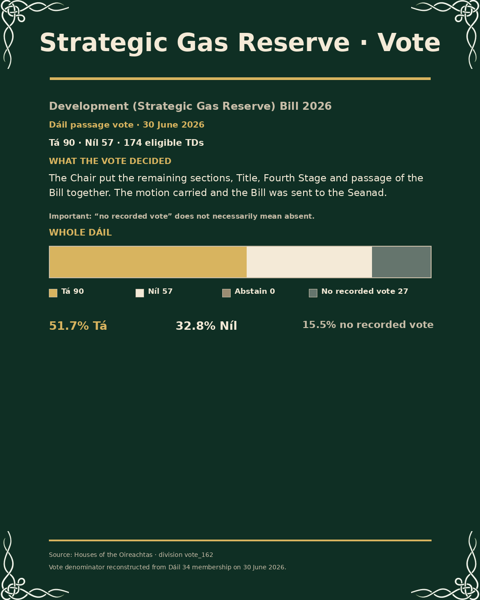
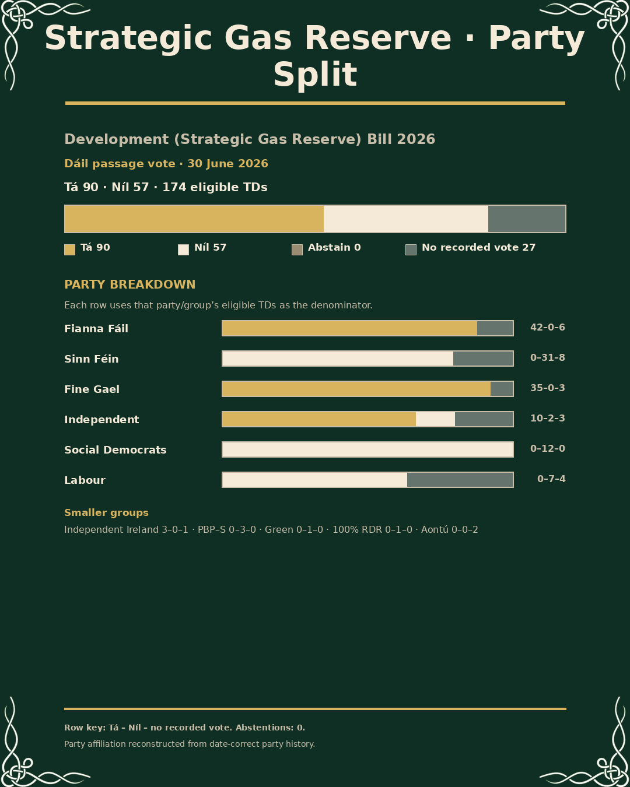

Bill Tracker · vote visual options
Strategic Gas Reserve Bill · Dáil passage vote · 30 June 2026
90 Tá · 57 Níl · 0 abstentions · 27 no recorded vote · 174 eligible TDs
Approved factory 386b933 · pending human review

A · Overall chamber bar

B · Overall + party split
